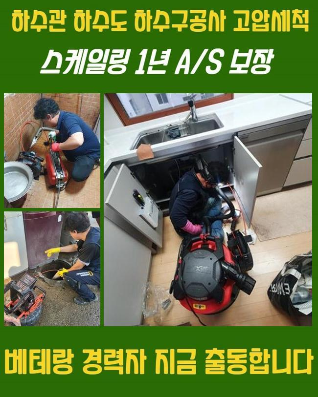
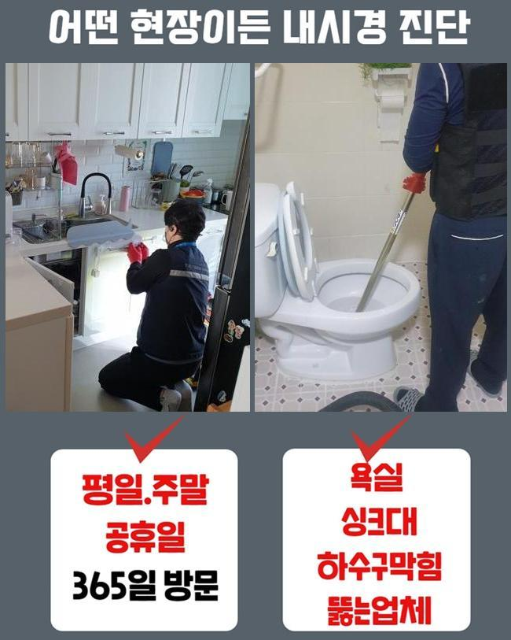
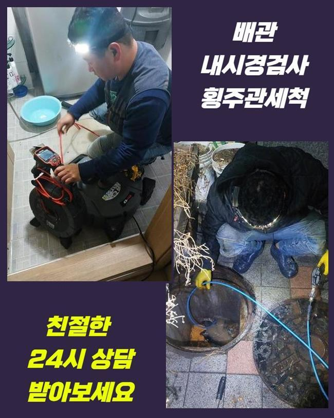
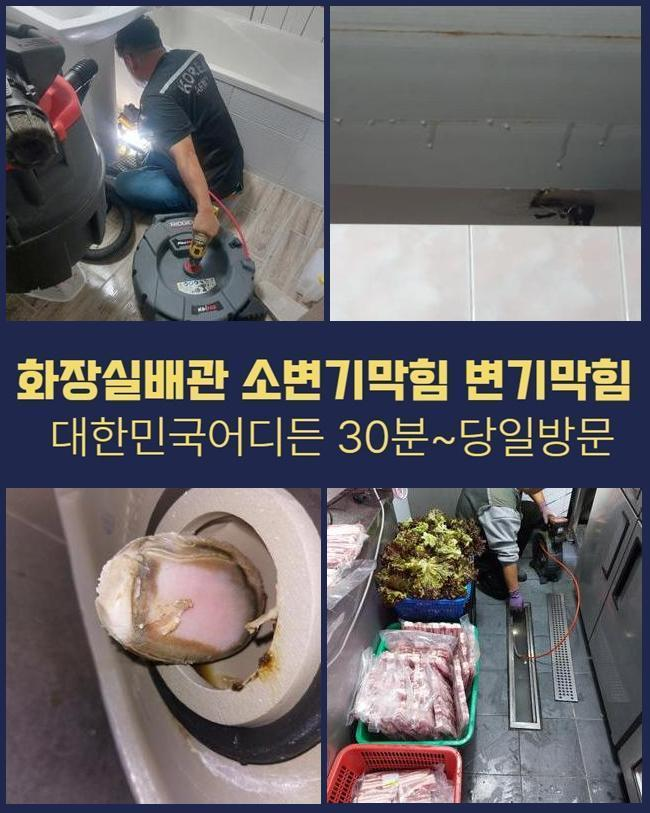
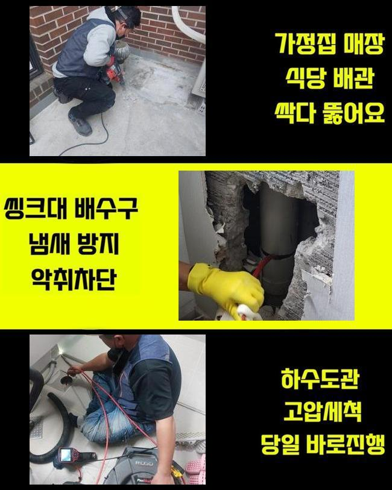
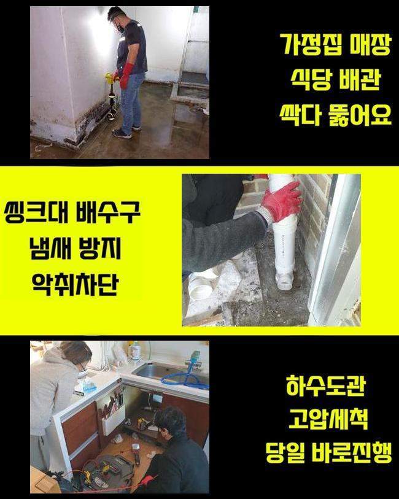

🏠 양주 남방동씽크대배수관막힘 덕계동 냄새차단 설비공사
양주 싱크대막힘 전문 시공 후기

📋 작업 개요
- 위치: 양주
- 서비스 유형: 싱크대막힘, 하수구막힘, 배관막힘, 집수정막힘, 누수수리, 역류해결, 뚫는업체, 배관청소, 고압세척, 설비공사, 악취차단
- 작업 일시: 2025. 5. 31. 12:28
- 업체명: 하수구수사대 (010-5615-2118)
🔍 문제 상황
양주 남방동씽크대배수관막힘 덕계동 냄새차단 설비공사
하수도막힘이 발현되었을때 간단한 문제로 끝나게되면 문제가 없겠지만 방임할경우 2차문제들로 커질수있죠
문제발생시 조속하게 처리해야 하는데 혹시나 방치하신다면 업체와함께 막힘현상을 해결하시는게 좋습니다
오늘 내방했던 현장장소는 밀집된 상가건물인데 배수구막힘이 일어나서 문의주셨죠
이런 문제들이 발생하면 물을 사용하지 못하니 1시간 안팎으로 방문드려요
상가건물중 식당쪽에있는 주방부분에서 막힘문제가 일어난 것인데요
주말에 식당운영을 진행해봐야 하다보니 신속히 해결해야했죠
막힌원인에 대하여 알아내기 위하여 서둘러서 움직였죠
식당입구쪽과 내부쪽 부분들도 살펴보니 트렌치배수구와 연결되어있는 메인관도 막혀있었어요
현재상태에 대하여 전달드린후 작업에 들어갔죠
작업착수전 반드시 고객님께 작업과정을 안내하고있죠

🔎 원인 분석
💡 전문가 진단: 정밀 진단 장비를 사용하여 슬러지의 고착 여부를 판명하고 타격/세척 작업을 실시했습니다.
샤프트기계로 안속에있는 이물질들을 분쇄시켰죠
식당장소여서 기름슬러지가 가득했어요
조심스럽게 강도조절을 진행하며 하수구내부에 쌓인이물을 없애줬어요
수리중간에 제거작업이 깔끔하게 이뤄지는지 내시경카메라를 통해 체크하면서 진행했어요
역류중이던 배관이다보니 신경써가며 손상이 일어나지 않게끔 배관세척을 해주었는데 2차피해없이 역류현상을 바로잡아서 안심할수가 있었습니다
바깥쪽을 작업해준뒤 건물안으로 이동했습니다
식당내부에 있는 씽크대쪽이 막혔다고 하여 하수구카메라를 써서 막힌이유에 대해 분석을 시작해주었죠
검사를해보니 기름때가 고착되면서 막히게된걸로 판단되었죠
석회이물을 없애고자 분쇄장비로 부수어주었죠
다음으로는 잔여되어진 찌꺼기를 석션기로 빨아들이는 단계별 작업착수로 기름슬러지가 깔끔하게 제거되었네요
막히는현상은 여러의 이유들로 막히게되는데 주요한이유는 오염물질 때문이죠

🔧 작업 과정
이렇다보니 오염물과 같은것이 들어가지않도록 신경을 써주시는것이 좋고 정기적인 배관상태를 점검하셔서 문제에 대하여 체크해야해요
긴시간 작업하며 트렌치안에 쌓여있는 기름슬러지와 오염물들을 해결해냈어요
집수정쪽도 마찬가지로 막힘현상이 있는걸 알아냈어요 집수정은 단순한 기계로는 해결하기가 어려우므로 고압세척도구가 필요한 상황이었죠
사용하기전에 의뢰자에게 동의를얻고 고압세척을 진행해야하는 필요성부분을 안내드렸어요
고압청소의 경우엔 강한압의 물이 이용되기에 작업자가 주의하여 수리하는것이 요구되는데요
과도하게 진행되면 하수구벽면에 손상문제로 불거질수있죠
집수정안에 기름기가 가득하여 고압청소기로 쌓여있는 잔해물들을 밀어내면서 제거해주었죠
외부와 내부까지 전체적으로 수리하니 배수상황이 원활히 복구된것을 살필수있었어요
식당처럼 영업장소는 막대한 경제적손해로 이어지므로 주말에도 방문해드리고 있어요
배수구망과 냄새차단 트랩을통해 악취나 막힘까지 방지할수있어요
확실하게 처리하는 해결책은 막힘징조가 나타날때 발견그즉시 업체에 의뢰하여 처리하는겁니다
재차 말씀드리지만 막힘을 방치하면 역류나 누수같은 현상들로 이어진답니다
막힘증세를 처리하고자 자가조치를 여러번 해보셨을거라 생각해요 간략하게 시도해볼수있는 방법에대해 알려드리겠습니다
온수나 배수구클리너를 적절히 이용하여 하수구에 부어부시고 뚫리지못하면 전문적인 조치를 받으셔야해요
과하게 시도하실경우 배관크랙이 발생할 가능성이 있으므로 일정한 양으로만 시도하시는게 좋아요
어느장소라도 하수관이 막힐경우 당혹스러울 겁니다
저희업체는 상가건물과 아파트 빌라등등 어떤장소라도 출동해 드리고 있답니다


✅ 작업 완료
작업을 진행할때 뚜렷한 작업계획으로 공개해야지만 신뢰가 갈거에요
현장상태를 살핀뒤 뚫는비용을 확실하게 공개합니다
싱크대나 화장실 하수구는 석션장비로만 해결된다면 5~10만원 내외로 책정되니 참고해주세요!
이밖으로도 궁금증이 있으시면 시간상관없이 전화주신다면 상세한 상담으로 도와드릴게요
막힘증상 발생했다면 신속한 조치를통해 피해받지 않으셨으면 좋겠어요!




⚠️ 베란다 누수 및 방수 관리 방법
- ✅ 비가 많이 올 때 창틀 주변이나 아래층 천장에 얼룩이 생기는지 정기적으로 확인해 보세요.
- ✅ 우수관 주변 실리콘 마감이 들뜨거나 깨진 틈새가 있는지 손상 여부를 수시로 체크하세요.
- ✅ 베란다 바닥 타일의 줄눈(메지)이 소실되면 그 틈으로 물이 침투하여 누수가 유발됩니다.
- ✅ 누수 의심 증상 발견 시 방치하면 아래층 손실이 커지므로 즉시 전문가의 진단을 받으십시오.
💡 핵심 정리
- 확실한 장비 작업(내시경 점검 및 샤프트 스케일링)으로 원인을 뿌리 뽑습니다.
- 작업 후 1년 이내에 동일한 부위 재발 시 100% 무상 A/S 서비스를 보장합니다.
- 서울 · 경기 · 인천 전 지역에 24시간 언제든 긴급 출동할 수 있도록 항시 대기 중입니다.
❓ 자주 묻는 질문 (FAQ)
🚨 양주 싱크대막힘 문제로 고민이신가요?
정확한 원인 진단과 확실한 시공으로 재발 없는 해결을 약속드립니다.
24시간 긴급 출동 | 서울 · 경기 · 인천 전지역 | 1년 내 재발 시 무상 A/S